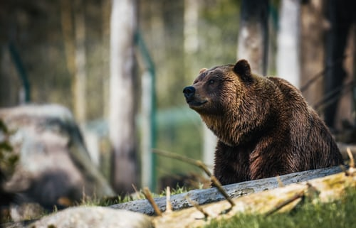

Bart the Bear (January 19, 1977 – May 10, 2000) was a male Alaskan Kodiak bear best known for his numerous appearances in Hollywood films, including The Bear (for which he received widespread acclaim), White Fang, Legends of the Fall, and The Edge.

They are definitely big, and yes, they are very strong. They can be scary, but most will only become aggressive when threatened or when their babies are threatened and even then many species of bear won’t attack. Bears are solitary and quite docile animals that have been given a bad reputation. They are smart, shy and are great at hiding when they need to.Brown bears have one of the smallest amounts of territory, and their numbers are still up for debate. Brown Bears size and weight can change drastically, depending on whether they’re located inland or on the coast.
My own thee bears , Michelle, Stephanie, James.